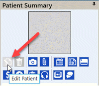
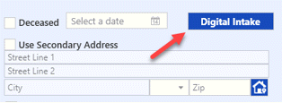
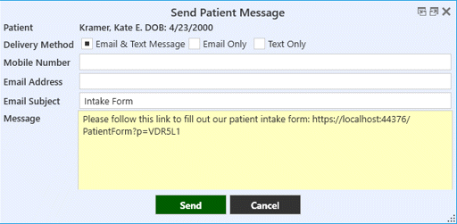
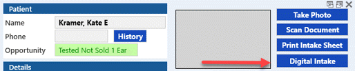
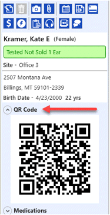
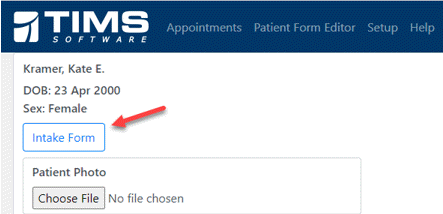

Implementing the Digital Intake
There are several ways to launch and use the Digital Intake form.
- An email or text can be sent to a patient prior to their appointment, with a link to the Digital Intake form.
- The QR code in the patient summary panel can be scanned with an iPad to give to the patient.
- A link can be added to the appointment notification templates.
Text or Email the Digital Intake From
(*fees apply)
From Patient Details
- After adding a new patient, or for an existing patient, click the Edit Patient button in the Patient Summary panel.

- Click the Digital Intake Sheet button on the top right of the screen.

- On the following window, the patient can be emailed and/or texted with a link to the digital intake form.

From Appointment Details
- Double-click on an appointment to open the detail screen. Click on the Digital Intake button.

- The same window appears as above, where the patient can be emailed and/or texted with a link to the digital intake form.
Using the QR code to load the Digital Intake
- When the patient is present at check-in, from the patient summary panel, find the QR Code drop down arrow to display the QR Code.

- It can be clicked once, which loads the weblink to select the Intake Form. The QR Code can also be scanned with an iPad or tablet (logging in may apply).

- The device can then be handed to the patient to fill out. When the patient clicks the Submit button when finished, the process will save and alert the office.
Sending a link with Appointment Notifications
(*fees apply)
A link to the Digital Intake form can be also be sent with daily appointment notifications. In provider setup, select a provider, double click a confirmation item. In the Email Template or Sms Template tabs, right click in the Body or Message fields, to input the {DigitialIntakeFormLink} add-in to your notification message. The link will then be included with the email and/or text sent to the patient.